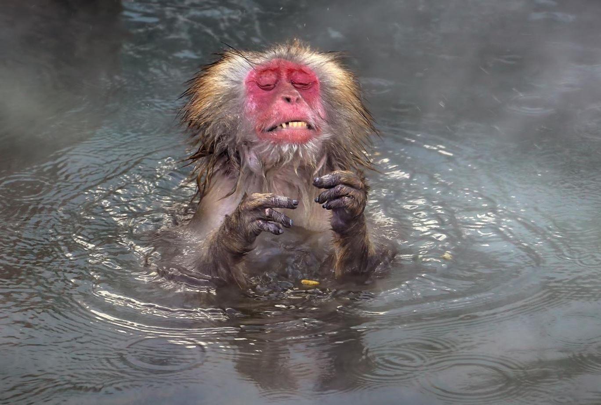
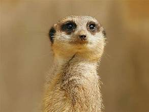
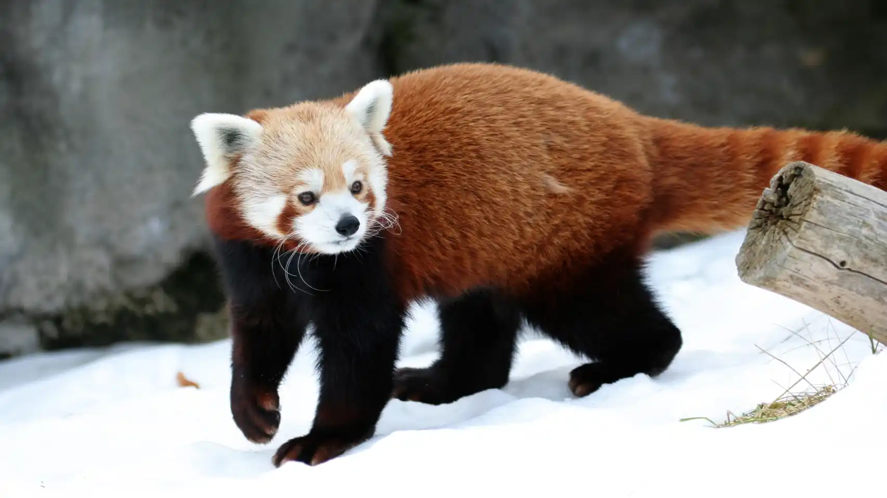
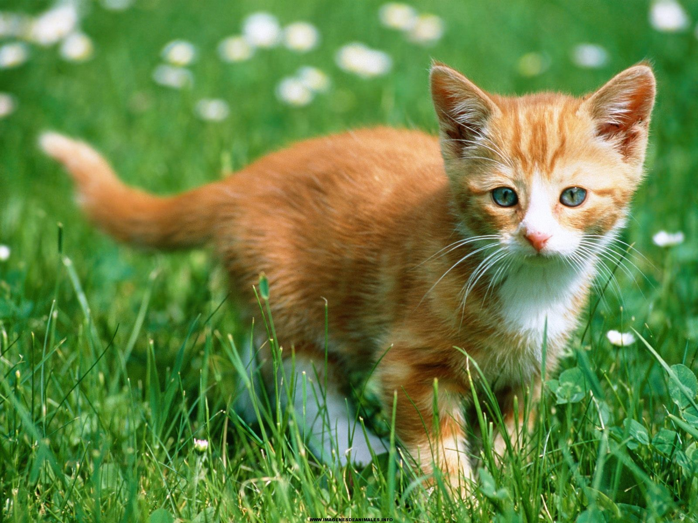

ねこのみかちゃん
esta pagina tiene animales y sus 'dionisios' sonidos

Un mono de cara roja. tambien conocido como babuino, es el animal que interpreta a Rafiki en el rey leon (1999 - 2000) R.I.P

una suricata. una especie de mangosta y hace el papel de timon en el rey leon (1999 - ?)

el panda rojo es uno de los pocos de su rama de evolucion vivos, es el que co-interpreta la pelicula Red (2021 - 2021, 2021 - ?)

esta ardilla llamada scat. es tan solo un ardilla gris comun. mientras tanto su ancestro, Scrat hico el co-protaginista en la pelicula Ice age (2.4billones a.c - inmortal)
